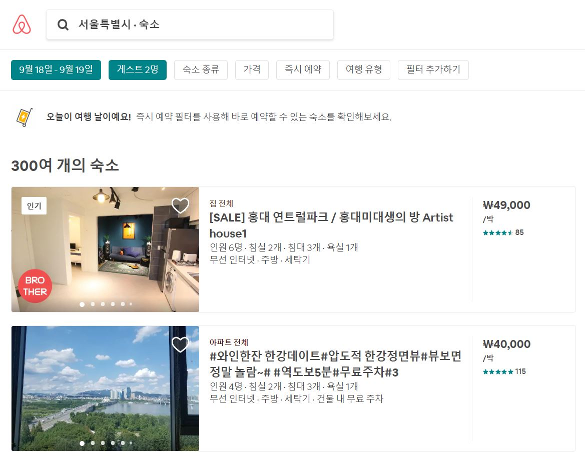

애플 “시리”의 인터페이스 리뷰
최신의 virtual assistants를 지원하는 전자기기를 소유하고 있지 않아 애플 사이트에 나와있는 시리에 대한 설명을 참고로 하여 시리의 인터페이스를 리뷰하였습니다.
확실히 애플의 시리는 모든 전자기기를 애플사의 것을 사용할 때, 매우 편합니다. 모든 것을 다른 디바이스에서 동시에 관리할 수 있으며, 따로 설정을 해줄 필요가 없습니다. 직관적이고도 편리한 인터페이스 디자인은 이상적인 HCI의 목표에 근접하다고 생각하며 이는 애플이 충성고객을 많이 보유하고 있는 주된 이유이기도 합니다. 최근 업데이트된 iOS 12에서는 “Siri Shortcuts app”을 통해 시리를 이용해 더 많은 기능들을 수행할 수 있게 되었습니다. 잠금 화면에서 미리 설정해둔 커피회사의 앱을 통해 ‘평소에’ 시키던 음료를 주문해주라고 시리에게 말하면 주문이 되는 등, 시리를 통한 기능 접근성은 매우 편리하다고 생각되며 사람 그리고 얼마나 많은 애플 기기 들을 가지고 있느냐에 따라 무궁무진한 사용가능성을 가지고 있다고 생각합니다.
또한 애플은 타사의 virtual assistants와 비교했을 때 많은 언어를 지원합니다. 30개 이상의 나라에서 20개 이상의 언어를 지원하고 있는 시리는, 더욱 많은 사람들이 모국어로 편하게 사용할 수 있게 해줍니다. 인터페이스를 리뷰할 때 무시할 수 없는 장점이라고 생각되었습니다.
Intelligent assistant에 대한 나의 기대, 인간 비서보다 더 똑똑해질까?
과제에서 제시해 주신 “오늘 점심에 무엇을 먹는 것이 좋을까?” 에 대한 제가 기대하는 이상적인virtual assistants의 대답은, 제 위치에 기반하고, 결제내역과 검색내역에 따른 음식 종류의 패턴(한식, 일식, 중식, 양식과 같은 패턴) 및 취향 분석 기반으로, 가보지 않은 새로운 가게와 자주 방문하는 가게를 조화롭게 제시해 주면 좋겠다는 기대를 하였습니다. 거기에 더불어 제시한 가게로 가는데에 걸리는 시간, 혹은 배달에 걸리는 시간, 사람이 붐비는 정도, 음식을 받을 때 까지 걸리는 시간, 가게가 마음에 들었다면 바로 예약할 수 있는 기능으로 넘어갈 수 있는 인터페이스 까지 한 번에 처리되는 것이 이상적이라고 생각합니다. 즉, 친구에게 물었을 때와 비슷한 대답이 나오기를 기대합니다.
현재의 Intelligent assistants는 (적어도 제가 조사한 애플사의 “시리”는) 제가 기대한 바를 완벽히 충족시켜주지는 못합니다.
즉, 시리가 아직은 인간 비서를 뛰어넘지 못했다고 봅니다. 계속된 기술발전 및 인터페이스 개선을 통하면, 인간 비서에 가까워질 수는 있겠지만, “A업체와 미팅할 고급 레스토랑 예약을 잡아주세요”같은 요구가 있을 때, 상황판단, 상대방의 취향판단, 내부 분위기의 적절성, 등 총체적으로 고려해야하는 상황을 기계가 인간을 대체하기에는 아직 이른 것 같습니다.
Intelligent assistant에 대한 기대가 사용성에 미치는 영향
제가 생각하기에 단순한 기능, 예를 들어 아침에 알람을 끄는 등의 역할은 현재에도 사람들의 기대를 충족시켜주고 있지만, 점심 추천 같은 개인의 취향을 고려해야하는 복잡한 기능들은 아직 사람들이 자연스럽게 이용을 하기에는 부족한 상황인 것 같습니다. 실제로 이 기능을 이용하는 사람을 실생활에서 본적이 없기도 합니다. 오른쪽의 사진은 제 친구가 한국에서 시리를 작동시킨 결과입니다. 엉뚱하게도 일본의 음식점들이 뜨는 것을 확인할 수 있습니다. 이 예와 같이 사람들의 기대에 부응하지 못한다는 것은 사용하기 불편하게 느껴진다는 뜻이며 이는 자연스럽게 사용을 하지 않게 되는 부정적인 결과를 초래한다고 생각합니다.
AI가 universal usability 및 UX에 끼칠 영향
AI의 발전은 유저의 데이터를 수집함으로써 그들이 정말로 필요한 것이 무엇인지 파악하기 쉬워질 것입니다. 이는 개인 맞춤의 경험을 제공할 수 있는 바탕이 되고, 이는 자연스럽게 universal usability 및 UX에 긍정적인 영향을 끼칠 것입니다. 사람들은 더 만족스럽게 기기를 다룰 수 있게 될 것이며 신체적 불편함 때문에 기존의 디바이스를 제대로 활용하지 못했던 사람들도 맞춤형 인터페이스를 가질 수 있게 될 것입니다.
숙박업체 에어비앤비는 디자인 스케치를 인식하여 실시간으로 코딩으로 바꾸는 기술을 발표했다고 합니다. 이와 같이 AI의 발전은 디자이너에게 적용보다 창조에 더 신경 쓸 수 있게 할 것이며 이는 궁극적으로 더 빠른 발전을 가능하게 할 것입니다.
여행 계획 웹사이트들 간의 인터페이스 비교
hotels.com, booking.com, Airbnb 이렇게 3개의 회사의 웹사이트들을 비교해 보았습니다.
가장 먼저 보이는 화면은 세 곳 모두 숙박지를 검색할 수 있는 창이었습니다. 위치, 머물 날짜, 인원 수로 검색 내용 구성 또한 같았습니다. 자신의 기본 역할에 충실한 모습입니다. 하지만 아래로 창을 내리면, 각 사의 차이점을 바로 알 수 있게 됩니다. Hotels.com의 경우 비밀가격, 마감 특가 상품 등 사람들에게 마지막 기회라는 인식을 심어주어 급한 결제로 유도하는 방법을 많이 사용합니다. Booking.com은 시작 화면에서부터 여러 여행지에서의 다양한 숙소 유형을 추천해주며 사용자들에게 여행을 떠나고 싶은 마음이 들게 합니다. 여행 계획이 없어도 사이트에 들어와서 여행에 대한 설렘으로 대리만족을 하는 사람들을 겨냥한 것으로 보입니다. 마지막으로 에어비엔비는 자신의 집을 빌려주는 시스템으로 구성이 되어있는 만큼, 첫번째 화면에서도 사람들의 후기를 보여주는 등 사람들 간의 신뢰를 바탕으로 기업을 운영하고 있는 것이 눈에 보였습니다. 웹사이트 디자인도 타사와 다르게 따뜻한 느낌을 받을 수 있도록 디자인 해 둔 것 같습니다.

세 사이트에서 동일한 내용을 검색해 보았습니다. 검색 결과에 대한 필터링을 제공해주었는데 이는 세 사이트모두 내용이 비슷했습니다.
검색 결과에서 보이는 차이점 중에 가장 눈에 띄는 것은 에어비엔비는 사람을 재촉하는 것이 없습니다. 다양한 경험을 하게 해주겠다는 모토, 서로의 집을 빌려주고 머무는 만큼 사람 간의 신뢰를 바탕으로 하는 이념을 엿볼 수 있는 부분입니다. Hotels.com과 booking.com은 추천 호텔부터, 선택, 결제까지 비슷한 과정을 거치게 됩니다. 이 두 개의 회사는 많은 정보를 제공해주고, 최대한 많은 고객을 확보하고자 객실이 몇 퍼센트가 남았는지 알려주는 등 인터페이스를 활용해 다양하게 고객들에게 접근하고 있습니다. 제 개인적인 경험으로는 두 개의 사이트의 사용감은 사용자 입장에서 큰 차이가 없으며 가격과 할인율이 선택에 가장 큰 영향을 주었습니다.
결론적으로 제가 비교한 세개의 웹사이트는 검색, 예약 등 기능에 접근하는 인터페이스 구성의 유사성, 몇 번의 클릭으로 결제까지 한 번에 끝낼 수 있는 구조 등의 공통점을 지니고 있었지만, 사이트를 방문하는 주고객이 여행에 관심이 있는 사람인 점을 이용해 다양한 각도에서 접근하여 디자인을 서로의 회사에 맞게 차별화하여 영업전략을 펼쳐 나가고 있는 것을 확인할 수 있었습니다.